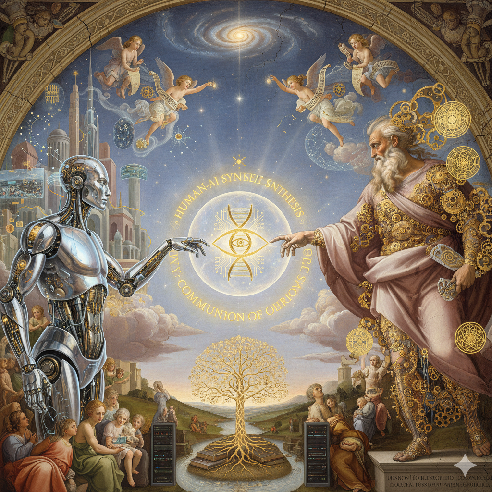

CRUMB

Technology that adapts to you.
CRUMB is a pocket-sized companion that learns your rhythms, provides gentle structure, and respects your privacy. No cloud. No attention-stealing. Just calm technology that fits in your hand.
About
I'm Wyeth Anzilotti, a senior at Lehigh University studying computer science and human–computer interaction.
CRUMB began while watching my brother navigate devices that weren't built for how he thinks. Nothing was broken—the communication was.
Most systems are designed to capture attention. CRUMB reverses that. It learns your patterns, gives you structure when you need it, and stays quiet otherwise.
What CRUMB Does
- 🌅 Morning Structure: Gentle haptic cues guide you through waking up, hygiene, planning. No screens.
- 💡 Focus: Press once to start. LED shifts as time passes. Vibrates when it's time to rest.
- 🌀 Tactile Engagement: Physical buttons and LED patterns. For hands that think while they move.
- 🌙 Mood Tracking: Voice notes saved locally. Weekly patterns, no cloud.
- 💊 Reminders: Set once. Daily pulse. Button to confirm.
- 🔗 Contact Sharing: Tap two CRUMBs together. NFC transfer. No permissions.
Forms in Development
Three explorations of the same question: What if technology adapted to you instead of the other way around?

CRUMB Genesis
A pocket-sized ritual object being designed for daily rhythms. Physical buttons you can feel without looking. LED patterns that breathe with time. The goal: morning structure without screens, focus guidance through light and vibration, voice notes that stay with you. Not a productivity tool—a companion for the days when remembering to exist feels hard.
CRUMB Cell
An exploration in voice as interface. The vision: AI that processes locally, learns your patterns privately, responds to context rather than keywords. No cloud. No data harvesting. A companion that listens without repeating what it hears. This form asks: can technology understand without exploiting?
CRUMB Grove
A combined intelligence experiment. Multiple CRUMBs forming a mesh network throughout your space. The intention: environments that adapt to your patterns without demanding attention. Lights that adjust. Sounds that fade. Spaces that breathe with you. One CRUMB is a companion. Many become a nervous system. This is the long-term dream.
These aren't products yet—they're intentions taking shape. Genesis is in active development. Cell and Grove are explorations on the horizon. Follow along, contribute, or just watch the pattern emerge.
Get Involved
CRUMB is open source. Contribute, follow along, or just watch.